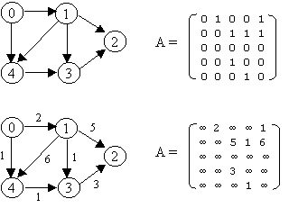
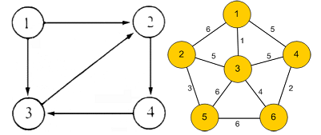
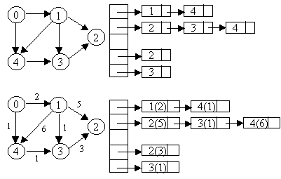
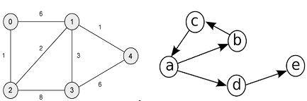
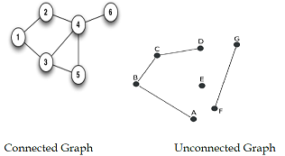
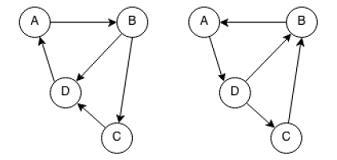
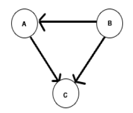
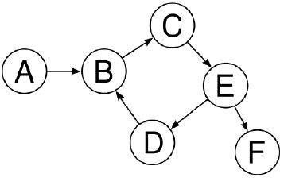
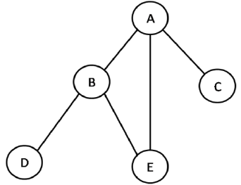
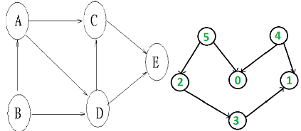

Each graph of n nodes is represented by an n x n matrix called Adjacency matrix in which
A[i][j] = ∞ if (i,j) is not an edge
Example :

6. Write the adjacency matrix for following graphs. (left as exercise for students)(Apply)

7. Write about adjacency list (Understand)
A graph of n nodes is represented by a one-dimensional array L of linked lists, where L[i] is the linked list containing all the nodes adjacent from node i. The nodes in the list L[i] are in no particular order.
Example:

Note : In case of weighted graph, additional field can be added in every node in the list to hold weight of every edge.
8. Write the adjacency list for following graphs. [Left as exercise for students] (Apply)

9. What is meant by connected graph? Give Example. (Remember)
An undirected graph is said to be connected if there is a path from every vertex to every other vertex.
Example :

10. What is meant by strongly connected graph? Give Example. (Remember)
Andigraph is said to be strongly connected if there is a path from every vertex to every other vertex.
Example :

11. What is meant by weakly connected graph? Give Example. (Remember)
If a directed graph is not strongly connected, but the underlying graph (without direction to the arcs) is connected, then the graph is said to be weakly connected.
Example :

12. Name the graph traversal techniques. (Remember)
- Depth First Search
- Breadth First Search
- Topological Sorting
13. Write the algorithm for DFS. (Remember)
- Select an unvisited node x, visit it, and treat as the current node
- Find an unvisited neighbor of the current node, visit it, and make it as the new current node;
- If the current node has no unvisited neighbors, backtrack to its parent, and make that parent the new current node;
- Repeat steps 3 and 4 until no more nodes can be visited.
- If there are still unvisited nodes, repeat from step 1.
14. Write the DFS traversal for following graph. (To be done by students) (Apply)

15. Write the algorithm for BFS. (Remember)
- Select an unvisited node x, visit it, have it be the root in a BFS tree being formed. Its level is called the current level.
- From each node z in the current level, in the order in which the level nodes were visited, visit all the unvisited neighbors of z.
- The newly visited nodes from this level form a new level that becomes the next current level.
- Repeat step 2 and 3 until no more nodes can be visited.
- If there are still unvisited nodes, repeat from Step 1.
16.Write the BFS traversal for following graph. (To be done by students) (Apply)

17. Write about topological sorting in graphs. (Remember)
- A topological sort is an ordering of vertices in a directed acyclic graph, such that if there is a path from vi to vj, then vjappears after vi in the ordering.
- A topological ordering is not possible if the graph has a cycle, since for two vertices v and w on the cycle, v precedes w and w precedes v.
- A simple algorithm to find a topological ordering is
- First find any vertex with no incoming edges.
- Then print this vertex, and remove it, along with its edges, from the graph.
- Then apply this same strategy to the rest of the graph.
18. Perform topological sorting for following graphs. (To be done by students) (Apply)

19. Define minimum spanning tree (MST). (Remember)
- A minimum spanning tree of an undirected graph G is a tree formed from graph edges that connects all the vertices of G at lowest total cost.
- A minimum spanning tree exists if and only if G is connected.
- Number of edges in the minimum spanning tree is |V| - 1.
20. Write down the applications of minimum spanning tree. (Remember)
- Electric wiring a house with a minimum length cable,
- Cable TV connection with minimum cable
- Telephone Network Design
- Taxonomy
- Cluster Analysis
21. Write the algorithms for finding MSTs. (Remember)
- Prim’s Algorithm
- Kruskal’s Algorithm
22. What is meant by shortest path algorithms? (Remember)
Given a connected weighted graph, G = (V, E), and two vertices u and v, finding a path of minimum total weight between u and v is called shortest path problem.
23. State the types of shortest path algorithms. (Remember)
- Single source shortest path problem
- All pair shortest path problem
24. What is meant by single source shortest path problem? (Remember)
Given as input a connected weighted graph, G = (V, E), and a distinguished vertex, s , finding the shortest weighted path from s to every other vertex in G is known as single source shortest path problem
Solution : Dijkstra Algorithm
25. What is meant by all pair shortest path problem? (Remember)
Given a connected weighted graph G(V,E), for each edge < u,v >(- E, a weight w(u,v) is associated with the edge. The all pairs of shortest paths problem (APSP) is to find a shortest path from u to v for every pair of vertices u and v in V.
Solution : Floyd – Warshall Algorithm
26. Write down the applications of shortest path algorithms. (Remember)
- Network Routing Protocols
- Google Maps
- Distances between the cities for the minimum route calculation for transportation (Traveling Salesman problem)
- Finding the minimum length cables required to cover the whole region